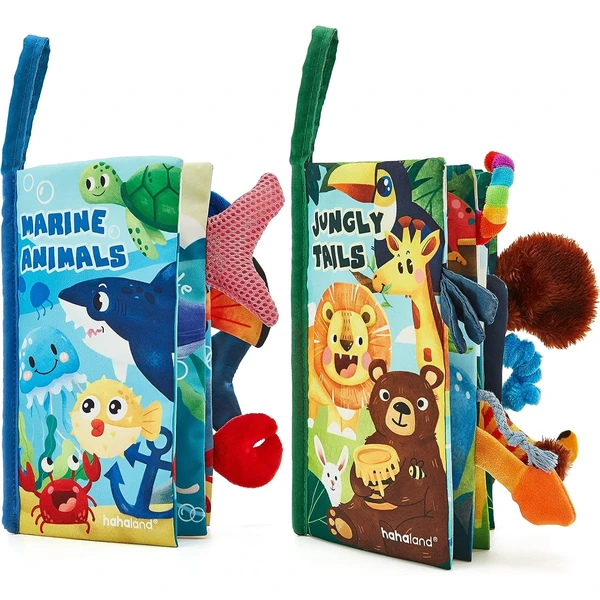

👶 6-12 meses
Pack 2 libros sensoriales hahaland
Dos libros de tela con colas de animales en 3D y hasta 20 texturas distintas, con páginas que crujen y un sonido "bibi" en el koala. Incluyen correa colgante para el cochecito.
⭐
¿Por qué nos gusta?
- ✔20 texturas distintas entre los dos libros.
- ✔Sonido integrado en uno de los animales.
- ✔Correa colgante incluida.
💬
Lo que más destacan las familias
No es raro encontrar comentarios sobre lo mucho que llaman la atención las colas con distintas texturas, que los bebés tocan y muerden una y otra vez. Tener dos libros en el pack también gusta porque permite alternar cuando se cansan de uno.